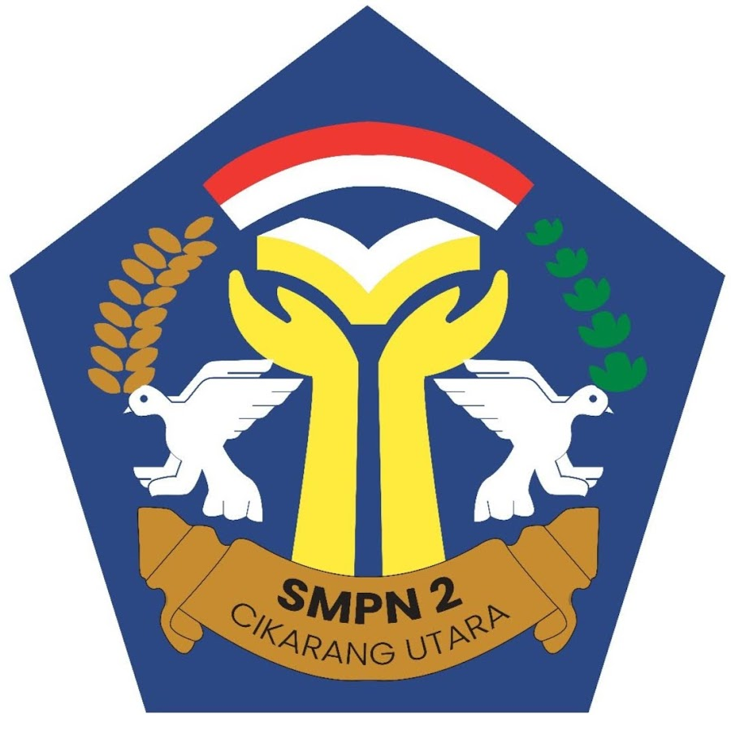
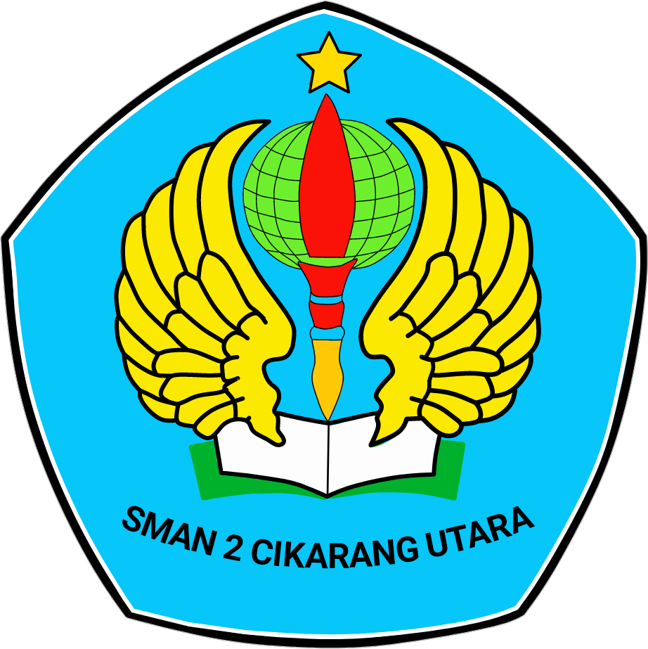

SDN SIMPANGAN 02
Saya telah lulus dari SDN SIMPANGAN 02 sekitar tahun 2017an, ini adalah sekolah awal saya selama 6 tahun pertama sebelum akhirnya sampai ke Universitas Pendidikan Indonesia.

SMPN 2 CIKARANG UTARA
Saya telah lulus dari DAKARA pada tahun 2020. Ini adalah awal saya juga belajar PEMROGRAMAN secara otodidak dari youtube pada kelas 8 SMP.
SMAN 2 CIKARANG UTARA
Saya telah lulus dari SMANDA jurusan Ilmu Pengetahuan Alam pada tahun 2023. Selama studi selain saya mengembangkan keterampilan di jurusan, saya juga terus belajar PEMROGRAMAN secara otodidak.
UNIVERSITAS PENDIDIKAN INDONESIA
Saya sedang menempuh studi di UPI Kampus Purwakarta dengan jurusan Sistem Telekomunikasi mulai dari tahun 2023 - Saat ini. Saya terus berusaha untuk memperluas pengetahuan dan keterampilan saya.